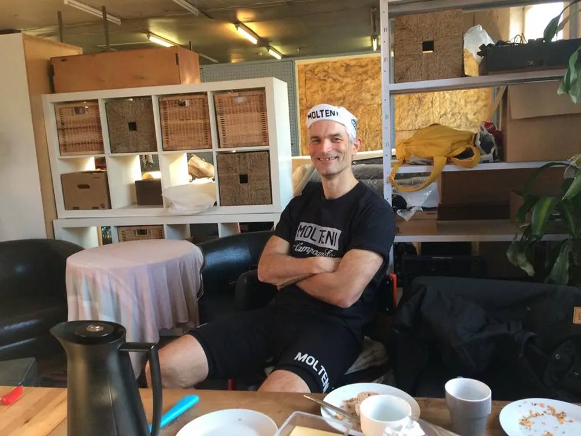
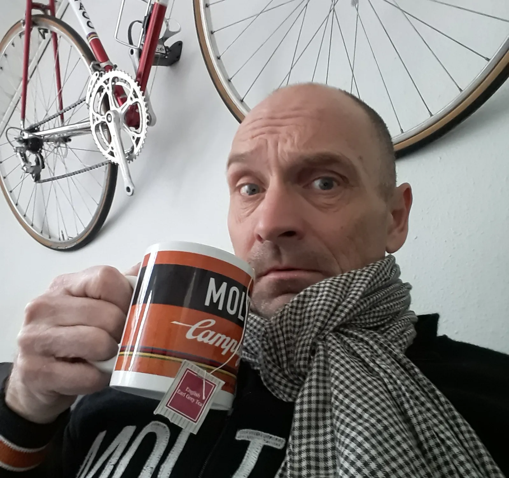

Squadra Molteni sendt til test

I går modtog Squadra Molteni endnu en besked fra UCI. Denne gang handlede det om, at rytterne Eigil Leegaard, Grane Maaløe og Per Sandahl har unormale salbutamol-værdier. Værdierne er målt under deres træningsophold på Mallorca i marts måned i år. UCI påpeger i deres besked, at Squadra Molteni inden én uge, skal give en forklaring på de unormale salbutamol-værdier. Holdlæge Finn Birk tog derfor en hurtig beslutning, og indkaldte rytterne til en fysisk test ved Sandahl Cykler.
– Ja, det var en u’lænding, som ringede til mig. En fra det dér UCI-halløj. Han sagde, at jeg skulle måle salbutamol-værdier på Eigil, Grane og Per. Så nu har jeg downloadet sådan én hersens app, som kan måle salbutamol-værdier via bluetooth, lyder det fra holdlæge Finn Birk på syngende fynsk.
Under testen kunne Finn se, at både Eigil og Grane lå langt nede i salbutamol-normaltområdet. Grane lå endda faretruende lavt nede. Også på andre værdier.

– Ja, det så fint u’. Men Grane er lang fra dér hvor han skal være formmæssigt. Han har ikke passet sin træning. For meget roderi med holdbussen. Så jeg har lavet en stram træningsplan til ham, så han kan komme i form til forårets klassikere, fortæller holdlægen.
Værre så det ud for Per Sandahl, der under testen (se video) viste 3-4 dobbelte salbutamol-værdier. Holdlæge Finn Birk er lidt usikker på grunden til de høje værdier hos Per Sandahl.
– Det ser ikk’ for godt u’ det dér. Per mangler en nyrer og den ene lunge vil ikke rigtig slå til. Og så har jeg nok ordineret lige lovlig meget astmaspray til ham…
Men nu lader jeg Per sidde på rullen et par timer og svede. Og når han så har dryppet af, og fået et par belgiske øl, så tester jeg ham igen. Det plejer at virke, fortæller Finn.
Kaptajn Bjørnsteen skulle også have været med til testen, men da han har halsbetændelse, har holdlægen ordineret hvile hjemme i sofaen – og en masse te med rom. En gammel klassisk kur.
